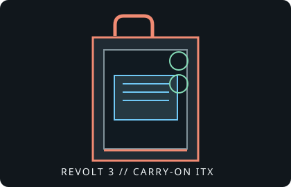

[ IDENTIFIED ENCLOSURE // PORTABLE ITX TOWER ]
HYTE Revolt 3
253 × 178 × 409 mm (D × W × H); portable Mini-ITX chassis with integrated handle, no required GPU riser and three expansion slots.

VARIANT / ARCHIVAL CAVEAT: Revolt 3 is sold without a PSU or in a bundle with an optional 700 W SFX-L PSU. The bundled supply's cable lengths and pre-routing are model-specific; the case itself accepts SFX/SFX-L.
Mechanical specifications and fit
| Catalog identity | HYTE Revolt 3 portable Mini-ITX case; black/white, bare case or bundled PSU SKUs. |
|---|---|
| Dimensions / board | 253 × 178 × 409 mm (D × W × H); Mini-ITX motherboard; three expansion slots. |
| GPU clearance | Most cards up to 335 × 140 × 58 mm (L × H × thickness) are listed; use the exact compatibility table for oversized cards. |
| CPU cooler / radiator | CPU cooler height up to 140 mm. Supports 120/140/240/280 mm radiators up to 35 mm thick; confirm fan stack, hoses and GPU clearance for the chosen setup. |
| PSU / storage | SFX or SFX-L PSU; optional bundle includes 700 W 80 Plus Gold supply. One 3.5-inch HDD and up to two 2.5-inch SSDs. |
| Revision / identification | Carry handle is rated by manufacturer at 14 kg; distinguish bare chassis and factory PSU bundle SKUs. |
Compatibility notes
The GPU envelope is specified in three dimensions, and some oversized cards are explicitly incompatible even when they fit the listed length. Check the manufacturer's GPU table, card connector location and cable bend radius. Radiators up to 280 mm are listed with a 35 mm maximum thickness; verify fans and fittings do not intrude into the GPU or motherboard area. The case routes motherboard I/O downward, so allow for rear-cable exit space.
- Keep the manufacturer GPU compatibility matrix with any unusual card installation.
- Check radiator length and complete thickness including fan/frame.
- Use the correct SFX/SFX-L cables and secure the handle before transport.
Manufacturer specifications and support
- HYTE Revolt 3 specifications and GPU compatibilityOfficial product page containing dimensional specifications and card fit table.
- HYTE Revolt 3 white product listingManufacturer's alternate color/SKU listing for the same case family.